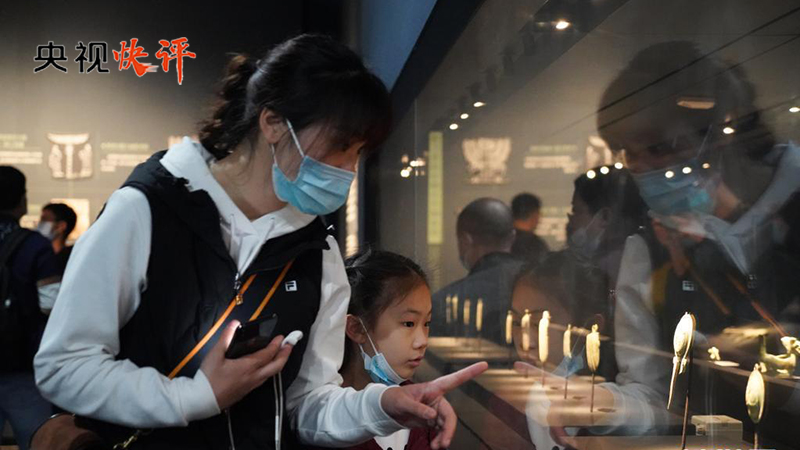

5月9日，习近平总书记给《文史哲》编辑部全体编辑人员回信，对办好哲学社会科学期刊提出殷切期望。总书记在回信中指出，增强做中国人的骨气和底气，让世界更好认识中国、了解中国，需要深入理解中华文明，从历史和现实、理论和实践相结合的角度深入阐释如何更好坚持中国道路、弘扬中国精神、凝聚中国力量。
习近平总书记的回信充分肯定了《文史哲》创刊70年来的工作贡献，高度强调了崇尚中华文明、发扬传统文化的价值和意义，为发展我国哲学社会科学事业提供了重要指引，必将推动广大哲学社会科学工作者在守正创新、薪火相传中取得更加丰硕的成果。
绵延数千年的中华文明博大精深，为中华民族生生不息、发展壮大提供了丰厚滋养，造就了中国人民自强不息的特质和禀赋。建党百年之际再回首，从民族独立到现代化建设，从改革开放到进入新时代，中华民族迎来从站起来、富起来到强起来的伟大飞跃，文化的力量功不可没。我国哲学社会科学学科体系不断健全，研究队伍不断壮大，研究水平和创新能力不断提高，一大批重要学术成果竞相涌现，为坚持和发展中国特色社会主义作出了重大贡献。
让世界更好认识中国、了解中国，需要我们更好阐述中华文明。人类社会每一次重大跃进都离不开思想的先导。当前，我国开启了全面建设社会主义现代化国家新征程，改革发展稳定各项任务挑战更多、要求更高，迫切需要哲学社会科学更好发挥作用。我们必须加强哲学社会科学领域体系建设，奋力提升学术原创能力，继续完善体制机制，不断加强人才队伍和学科建设，在纷繁复杂的多元思潮环境下巩固马克思主义在意识形态领域的指导地位，为贯彻新发展理念、构建新发展格局、夺取全面建设社会主义现代化国家新胜利注入思想动能。

文化兴国运兴，文化强民族强。迈步新征程，广大哲学社会科学工作者需要共同努力，一方面要坚守传统，积极在中华优秀传统文化中汲取养分，实现以古鉴今、古为今用；另一方面要守正创新，在新的时代条件下推动中华优秀传统文化创造性转化、创新性发展，让传统文化活起来，不断生发新的时代内涵，加强文化和文明的交流互鉴，为人类文明作出中国贡献。
牢记使命担当，不负伟大时代。广大哲学社会科学工作者要牢记习近平总书记重要嘱托，立时代之潮头、通古今之变化、发思想之先声，发扬“经世致用、知行合一”的精神，再接再厉、不断创新，把学术刊物办得更好，把学术成果写在祖国的大地上，不断构建具有中国特色中国风格中国气派的哲学社会科学，让世界更好认识中国、了解中国，为增强中华民族的文化自信提供有益的历史滋养和坚实的学理支撑。